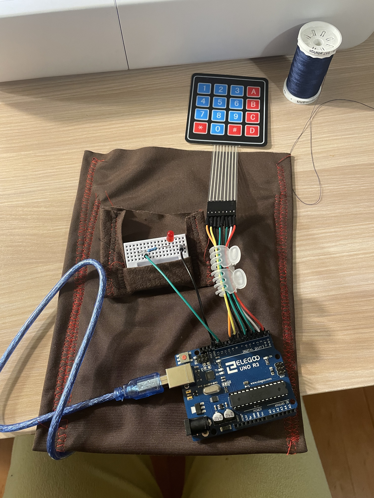
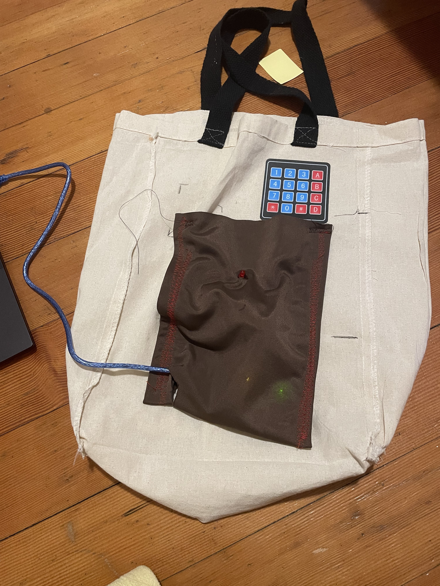

The Habit Tracking Tote bag was made to support a user in their efforts to break a bad habit. The user can set a maximum goal to stay under for the day. Then, they can press any key on the keypad when they perform their targeted bad habit, which will then increase the count. Once the user has reached their max goal for the day a red led will turn on to notify them. By pressing * the user can reset the count to 0 and the red led will turn off. The tote bag only accepts a new goal once everyday. If you reach your max daily goal the count resets to 0 , but will notify you when you reach your set maximum for the day again.
I used a 220 ohm resistor for the led. The Red led needs at least 160 ohms of resistance. 220 > 160
 
#include < Keypad.h > // importing keypad library
const byte ROWS = 4; // defining how many rows on keypad
const byte COLS = 4; // defining how many columns on keypad
int red_pin = 12; // initialize red led pin
int max_daily_goal; // int of users goal
int count = 0; // int to keep count of how many times button pressed
String temp; // temporary variable used to build up max_daily_goal from user input
bool acceptingInput = true; // intialize the state to accept user input when program begins
char hexaKeys[ROWS][COLS] = { // keymap array that is the layout of the 4x4 keypad
{'1', '2', '3', 'A'},
{'4', '5', '6', 'B'},
{'7', '8', '9', 'C'},
{'*', '0', '#', 'D'}
};
byte rowPins[ROWS] = {9, 8, 7, 6}; // what pins the rows are connected to
byte colPins[COLS] = {5, 4, 3, 2}; // what pins the columns are connected to
Keypad keypad = Keypad(makeKeymap(hexaKeys), rowPins, colPins, ROWS, COLS); // making keypad object
void setup(){
Serial.begin(9600); // begin serial communication (just used for checking and testing purposes)
pinMode(red_pin, OUTPUT); // set led pin to an output
keypad.addEventListener(keypadEvent); //add an event listener for this keypad
}
void loop(){
char key = keypad.getKey(); // check if user pressed a key, save the key in a variable key
if(millis() % 86400000 == 0 ) { // if it is an increment of a day
temp = ""; // reset temp to be empty so the user can enter a new goal that day
acceptingInput = true; // set state to accepting input
Serial.print ("now accepting input");
}
if(acceptingInput){ // if it is time to set a new goal
if(key){
temp = temp + key; // save the value that the user pressed in temp
Serial.print("temp is ");
Serial.println(temp); // output what the current temp variable is
}
}else{ //after the daily goal has been entered
if(key){ // if a user presses any key
count += 1; // increase the count by one
Serial.println(count); // output the current count
}
if(count == max_daily_goal+1){ // if the user has now reached their maximum for the day
//it is max_daily + 1, because when the user presses # to submit input it also increases the button count by 1, so the count starts at 1 not 0.
digitalWrite(red_pin, HIGH); // turn on the red led
}
}
}
void keypadEvent(KeypadEvent key){ // function for keypad events
switch (keypad.getState()){
case PRESSED: // if a button was pressed
switch (key){
case '#': // if # was pressed
max_daily_goal = temp.toInt(); // set the max_daily_goal to what the user inputted
Serial.print("Max daily goal is ");
Serial.println(temp); // output the max daily goal to serial monitor
acceptingInput = false;
break; // exit this case
case '*': // if user pressed *
digitalWrite(red_pin,LOW); // turn off the red led
count = 0; // reset count to 0
break; // exit this case
}
break; // exit cases for a pressed key
}
}
To create this tote bag I used an arduino, wires, 220 ohm resistor, 5v power source, red led, membrane keypad, and some scrap fabric and thred to make the pocket enclosure. Attach the led to pin 12 of your arduino. Attach the 8 wires of the keypad to pins 9-2. The membrane keypad accepts user input once daily. The user must enter a number and press '#' to submit their input. Then they can click any button on the keypad to increase the count. When they have pressed on the keypad the same number as their max goal a red led will turn on. Press '*' to turn the led off and reset count. The daily goal will stay the same for 24 hours. See firmware comments above for further explanation of logic. This was the second iteration of my project. My first iteration consisted of a push button and a red led. The logic was similar, but I was trying to get input from a p5 server. I felt like the pushbutton was too small of a target for the user to casually press, and I was having trouble with sending the correct number from the server to the arduino. With my second iteration I was able to incapsulate the user input functionality within the product.